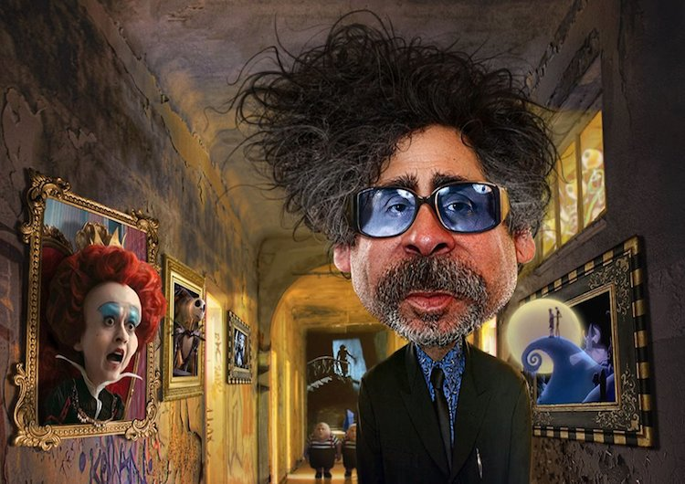

Inicio de la Situación de Aprendizaje
Bienvenido/a a esta situación de aprendizaje donde vamos a explorar una interesante herramienta para dibujo (digital). Durante 3 semanas (1 hora por semana), vamos a utilizar en el aula TIC, una aplicación para conseguir crear arte digital y mejorar imágenes. Todos los pasos van a seguirse a través de tutoriales para que no te pierdas.
A través de esta herramienta, vas a explorar la fusión de elementos artísticos y elementos tecnológicos para conseguir crear obras visuales únicas. Igual tenemos entre nosotros/as al nuevo Rodney Pike!!!!!!
Copyright Rodney Pikey (https://www.rodneypikeart.com/)